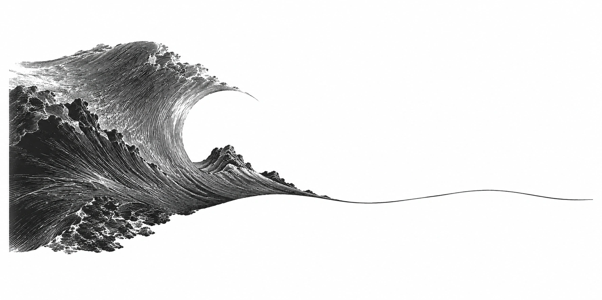

1 · Always Day One
The name Impossible, “It’s always day one,” and not wanting to be only an investor, philosopher, or commentator come from the opening of the February 2026 conversation.
A Motorcycle for the Mind
Naval; hosted by Nivi
Making got cheaper. Freedom didn’t.

Opening
We’re working on a very difficult project—that’s why it’s called Impossible—with an amazing team, and it’s really exciting building something again. It’s very pure, starting over from the bottom. It’s always day one.
I guess I just wasn’t satisfied being an investor, and I certainly don’t want to be a philosopher or just a media personality or a commentator. People who just talk too much and don’t do anything haven’t encountered reality. They haven’t gotten the harsh feedback from free markets or from physics or nature, and after a while it becomes just too much armchair philosophy. You’ve probably noticed my recent tweets have been much more practical and pragmatic, more grounded in the reality of working every day.1
Around the same time, I started writing code again.
Creation and Freedom is an independently compiled reader, first composed in Chinese and translated here. It draws on Naval Ravikant’s public conversations and posts from 2021 to 2026. Naval has neither authorized nor reviewed it.
The text is narrated in Naval’s first person. Everything the “I” says comes from what he has said in public, trimmed and rearranged by the editor; the English edition stays close to his published wording. Notes give the source and context for each passage. Nivi, David Deutsch, Elon Musk, and others keep their own attribution.
Each chapter closes with an editor’s note. These are the editor’s words: added conditions, reservations, and objections. They do not represent Naval’s views.
The book asks one question: as making things gets easier, do people become freer? Part 1 asks how time and markets are redistributed once the cost of making falls. Part 2 looks at how specific knowledge, judgment, and credibility form through action. Part 3 covers good products, deep understanding, and small teams. Part 4 returns to desire, interest, and the tradeoffs of a life. The scope and limits of the material are described at the end.
Chapter 01 · Part 1 · Leverage and Distribution
Around December of 2025, coding agents hit an inflection point. People started using them and were like, “Wow—this is an agent that stays on track, can build apps soup to nuts, can solve thorny problems, and really feels like having a junior programmer at your disposal who’s fast, essentially free, and ready to please.”
I have a computer science degree. I understand computer architecture and networking, a little bit of chips, algorithms. But I haven’t seriously coded in decades. I’d tried coding agents in the past with mixed results, but this time I really got into it. I describe an app in plain language, and the agent downloads libraries, wires up the services, builds test harnesses, and runs the program. I keep giving it feedback, even by voice—“This doesn’t work. That works. Change this. Change that”—and after a few rounds there’s a working app on my phone, without my having written a single line of code.2
For a large group of people who either don’t code anymore or never did, this is mind-blowing. It takes them from idea space, and opinion space, and from taste directly into product. Product management has taken over coding. Vibe coding is the new product management. Instead of telling a bunch of engineers what to do, you’re telling a computer what to do. And the computer is tireless. It’s egoless, and it’ll just keep working.
I built a custom tracking app for just my workouts, exactly the way I like it. I told the agent: “Use the functionality of Tonal and Ladder; follow Apple’s human interface guidelines to make it look like an Apple app; track my workouts the following way—here’s a text log of my last few workouts—and make it easy for me to re-enter new ones and to adjust them; build me pretty graphs and charts to track my progress.” Calculate strength scores. Integrate with Apple Health.3
Does this mean normal apps don’t have a place? No, of course they have a place. The apps that cover broad use cases are going to be the best-of-breeds. Someone’s hand-tuned them and slaved over them, and you’re not going to beat that if your use case is covered. But when you want something truly custom or private—niche apps that only you would want—this is incredible.
There was an app I was obsessed with for about a year called Airchat, a social messenger for people to talk through voice and video. I had eight or nine engineers, depending on the day, and we worked pretty hard for nine to twelve months and shipped a couple of variations. It didn’t quite work, so we sold it off and got the investors their money back.
I remember that experience as exhilarating, because I was building a product I wanted with a brilliant team. But I had to work through a team to do it. In building anything with a team, there are always compromises. Even if you’re the dictator in charge, which you rarely are, you have to accommodate other people. You can’t say, “Move this icon left. Now move it right. No, move it back. No, move it back again.” You’ll annoy the engineer. You can’t demand things where you don’t have a reasonable justification, where it’s just a gut feel.
With an AI coding agent there’s none of that. It’s like a self-driving car: you don’t feel self-conscious in a self-driving car because there isn’t a driver sitting there. So now I’m rebuilding Airchat from scratch, exactly the way that I want it. There’s no compromises.4
You may end up with more things like Minecraft, which Notch famously coded by himself. It was one person’s vision. It may have looked weird—“What is this blocky graphics? It’s like a huge step backwards”—but he didn’t have to compromise. He didn’t have to explain to anybody why he wanted it that way.
It really helps to have a clear direction, though. You have to know what you want—that’s actually the hardest thing—and have a very clear vision of it. I have that, because I was obsessed with Airchat for a year.
Don’t get me wrong—the majority of people are not going to code their own apps. This takes the number of people who might build apps from about 0.1 percent to one or two or three percent. For most people, computers are this magic black box, and the fact that it’s become 10x or 100x easier still doesn’t mean anything to them. But for people who are creative, self-motivated, and articulate, and who have a good vision, you can code now. There’s nobody standing between you and your prototype.
We may not see super high-quality code, at least not in this generation. The architecture needs a lot of work, there may be security holes, and it may be hard to scale. If you go to market with a high-functioning app and need to scale to a lot of users, you want to recruit a great team and get real engineers on board, and you’re probably going to have to rewrite the whole thing. But if you’re experimenting, prototyping, getting to market, there’s nothing better.
The personal app store is a little bit of a joke, too. It looks like an app store and my apps get delivered into it, but Apple will not let you build apps that can be downloaded on anyone’s iPhone. You have to key them against your specific devices. So I can deliver apps to friends and family; I can’t yet deliver them to everybody.5
Once the first version works, it still needs to be checked against the original problem. Software for your own use can follow your particular needs. A product that others will rely on also needs testing, maintenance, support, and a way to reach its users.
Chapter 02 · Part 1 · Leverage and Distribution
Nothing will make you more productive than owning your time. Nothing will make you less productive than selling it.
I said a long time ago that a taste of freedom can make you unemployable. I mean unemployable in the classic sense of nine-to-five, following the playbook, and having a boss. Once you’ve broken out of that, once you’ve walked the tightrope without a net, without a boss, without a job, it’s hard to go back. This can even happen in startups, in a small team where you’re very self-motivated.6
To the average person it looks like huge negatives: you don’t have weekends, you don’t have vacations, you don’t have time off, you don’t have work-life balance. But, at the same time, when you are working, it doesn’t feel like work. It’s something you’re highly motivated to do, and that’s the reward.
I do think this is a one-way door. Once people experience working on something they care about, with people they really like, in a way where they’re self-motivated, they’re unemployable. They can’t go back to a normal job with a manager and a boss and check-ins and nine-to-five and “Show up this day, this week, sit in this desk, commute at this time.”
If you’re doing it for the right reasons, with the right people, in the right way, and if you can set aside the stress of not hitting your goals—which is real and hard to set aside—then it doesn’t feel like work.
That’s when you’re most productive. You’re basically only measured on your output, and you’re only held up to the bar you raised for yourself. So it can be extremely exhilarating and freeing.7
Since going back to building, I find myself reading more books. I find myself listening to more technical podcasts. I find myself brainstorming a lot more. I’m just more mentally active. I’m even willing to meet more companies outside of investing, because I’m learning from them.
Being active makes me want to naturally learn more, and not in a way that’s unfun or causes me to burn out. So I think doing leads to the desire to learn, and therefore to learning. And of course there’s the learning from the doing itself. If you’re purely learning for learning’s sake, it gets empty after a little while. The motivation isn’t the same.8
Suppose a tool compresses a day’s work into an hour. Where do the other seven hours go? If tasks are still assigned by the hour, new work may fill that time. How much autonomy greater efficiency brings depends on the working arrangement.
Control over your time also involves income, savings, and existing commitments. The phrase “unemployable” is worth considering alongside those conditions. Could your current work be organized more around results, leaving you some of the time saved?
Chapter 03 · Part 1 · Leverage and Distribution
Just like now anybody can make a video or anyone can make a podcast, anyone can now make an application. So we should expect to see a tsunami of applications. Not that we don’t have one already in the App Store, but it doesn’t even begin to compare to what we’re going to see.
You might have wanted an app for a very specific thing, like tracking lunar phases in a certain context, or a certain kind of personality test, or a video game that made you nostalgic for something. Before, the market just wasn’t large enough to justify the cost of an engineer coding away for a year or two. That app that could have never existed will now exist.
Look at what happened on the internet. Amazon replaced a bunch of bookstores with one super bookstore and a zillion long-tail sellers. YouTube replaced a bunch of medium-sized TV stations with one giant aggregator, or maybe a second one called Netflix, and a whole long tail of content producers. The App Store model will become even more extreme. You’ll have one or two giant app stores helping you filter through all of the AI slop. At the very head, a few huge apps will become even bigger, because they can address a lot more use cases or just be a lot more polished. And there’ll be a long tail of tiny little apps filling every niche imaginable.
As the internet reminds us, the real power and wealth—super wealth—goes to the aggregator. But there’s also a huge distribution of resources into the long tail. It’s the medium-sized firms that get blown apart: the 5, 10, 20-person software companies that were filling a niche for an enterprise use case, which can now be vibe coded away, or absorbed by the lead app in the space.9
I put out a tweet that was something like, “Pure software is not venture investable anymore.” Nivi remembered it as “Pure software is rapidly becoming uninvestable.” That’s a watered-down version of what I really wanted to say, which is that pure software is uninvestable. Full stop.
If your whole advantage is “Hey, I’m building cool software that other people don’t know how to build,” that’s uninvestable, for two reasons. One is they can just hack it together today. The second is that coding agents are getting better so quickly that within a year, or even less, they’ll probably be building scalable software with good architecture. So if you’re a venture investor now, you’re looking for hardware, network effects, and AI models.10
The world is moving a lot faster now—geopolitically, economically, technologically. VCs are being forced to fund more hardware, rockets, drones, AI—sci-fi technologies, if you would call it that.
Cheaper software unlocks hardware, too. If you’re making security cameras, or toys for kids, or programmable lamps, the software just got a lot easier. You can have some bright kid with Claude Code get in there and build all the software you need. Or maybe you don’t need any software, because your devices are controlled by each person’s agent.
The biggest uncertainty is at the model layer, and I don’t know the answer. Does training stay concentrated in a few labs? Does open source really have a chance? Or do people just always want the smartest model, so that they’ll give up privacy, they’ll give up open source, and they’ll just pay up in the cloud?
There are forces on both sides. You pay for intelligence: the model that’s right 92% of the time is worth almost infinitely more than the one that’s right 88% of the time, because mistakes in the real world are so costly that a couple of bucks extra to get the right answer is worth it. That drives runaway scale economies. On the other side, China manufactures most of the consumer electronics, and Nvidia just wants to sell as many cards as possible. For both, open source is hugely beneficial, because it commoditizes their complement.11
Before this round of AI, in a 2021 conversation with Chris Dixon on Tim Ferriss’s show, I gave another answer to who owns the value: Web3. Code would be open, users would control their data, and contributors would share in platform ownership, while applications snapped together like building blocks.12
The judgments about AI and software companies in this chapter come mainly from February to May 2026. In the same conversation, Naval said agent-written code might need to be rewritten to serve many users, and predicted that agents would probably write scalable software within a year or less.5 In February he spoke of small software companies being squeezed; in April he also raised the possibility that large companies would benefit from owning distribution. These predictions are worth reading alongside the capabilities, time horizons, and uses he was discussing.
The 2021 Web3 ideas bring open code, user data, and contributor ownership together. Read alongside the later AI discussions, they raise concrete questions: how is work discovered, can users take their data with them, and how are contributions rewarded?
To assess how a software company might be affected, consider what it has beyond code: user trust, data, service, distribution, and knowledge of an industry. An individual maker can also ask how the work will be discovered, and who would keep using or paying for it.
Chapter 04 · Part 2 · Specific Knowledge and Credibility
You don’t get to say you’re exceptional at something. Other people get to say you’re exceptional at something, and your mom doesn’t count.
Anyone who has been in the investing business is constantly hit by people who say, “I’m so great at something,” and they’re a little delusional. Feedback from other people is usually fake. Awards are fake. Critics are fake. Kudos from your friends and family are fake. They might try to be genuine, but it’s lost in such a sea of fakeness that you’re not going to get real feedback.
Real feedback comes from free markets and nature. Physics is harsh: either your product worked, or it didn’t. Free markets are harsh: either people buy it, or they don’t. Individuals search for truth; groups search for consensus. That’s why a group can’t give you good feedback.13
I have an entrepreneur friend who is super hardworking. But what I notice is that he’s the most courageous. He just does not care what’s in the way. Nothing gets him down. He’s always laughing or smiling. He’s always moving through it.
A hundred years ago you would’ve said, “Oh, he’s the most courageous. Go charge that machine gun nest.” He would’ve been good for that. In an entrepreneurship context, he’s the one who can keep beating his head against the sales wall, calling hundreds of people until finally one person says yes. He’ll call 400 people and get 399 nos. And he’s fine with one “Yes.” And that’s enough. Then he can start iterating and learning from there.14
That’s his specific knowledge. It is knowledge: a capability he knows he’s okay with, with an outcome on the other side he’s willing to go for. That’s a superpower. If he develops it a little further, or combines it with something else, or just applies it where it’s needed, it makes him somewhat irreplaceable. You find your specific knowledge through action—by doing.
A lot of friends approach me and say, “Hey, let’s start a podcast together.” And I’m like, “Do you genuinely enjoy talking? Do you genuinely enjoy talking a lot?” I don’t mean enjoy it a little bit. If you’re going to be the top at it, you have to be almost psychopathic in how much you enjoy the thing.
Otherwise they do two or three episodes, and then they drop off. Their listeners pick up on it: “Actually this person is just asking a bunch of questions, kind of flat-faced, and doesn’t seem to really enjoy it, and is doing the podcast equivalent of looking at their watch.”
Whereas Joe Rogan is so into talking to all these weird people he has on his podcast that he would be doing it even if he had no audience. And he was doing it when he had no audience, on Ustream, live streaming late at night on one random website. It’s no coincidence he’s the top podcaster.15
So when you’re marketing, lean into your specific knowledge and into yourself. If you enjoy talking, try podcasting. If you enjoy a more conversational tone, try a live network. If you like long-form writing, or short-form, write. Choosing a business, a role, or a co-founder is a fit problem. It is a matching problem.
I said, “Become the best in the world at what you do. Keep redefining what you do until this is true.” The only way that redefining is going to work is through iteration, through doing.
And iterate does not mean repetition. Iterate is not mechanical. It’s not 10,000 hours, it’s 10,000 iterations. It’s not time spent. It’s learning loops. You do something, and then you stop and you pause and you reflect. You see how well that worked or did not work. Then you change it. Then you try something else. That’s the process of iteration, and that’s the process of learning. All learning systems work this way. Evolution is iteration: there’s mutation, there’s replication, and then there’s selection.
“399 nos and one yes” comes from Naval’s description of an entrepreneur friend. Whether to keep trying also depends on the cost of each failed attempt, the resources left, and what a yes would make possible.
A rejection may simply mean a poor fit. It may also reveal a problem with the product or how it is presented. Keeping track of the feedback, and whether it changes the next attempt, can help you decide how to proceed.
Chapter 05 · Part 2 · Specific Knowledge and Credibility
In the age of infinite leverage, judgment is the most important skill. There are programmers who just pick the right thing to work on and create something valuable, and others who pick the wrong thing, and their work has zero value in that short timeframe. Intelligence is not normally distributed. Leverage is not normally distributed. Programmability is not normally distributed. Judgment is not normally distributed, so the outcomes are going to be supernormal.16
I’ll write my query into one model, then copy it and fire it off into four models at once, and let them all run in the background. Usually I don’t even check for the answer right away. I come back a little later, and whichever model had the best answer, I start drilling down with that one. In some rare cases where I’m not sure, I’ll have them cross-examine each other—a lot of cut and pasting there. Then I ask follow-up questions and have it draw diagrams and illustrations. I’m a very visual thinker, and I absorb concepts much more easily when they’re presented visually.
But ten instances of one model talking to each other doesn’t improve its thinking the way ten humans talking to each other do, because those humans are trained on ten different datasets. It’s like 10 people with the same brain and the same dataset talking to each other. All you’re doing is throwing 10 times as many tokens at the problem. It’s like saying take 10 times as long. I’ve wired it up with GitHub so that every time I submit code written by Claude, Codex and Gemini automatically review the pull request—a council, a roundtable of AIs. I haven’t found that to be as useful as you might think. There’s still a lot of groupthink.17
If you push toward an answer—if you think you know what the answer is—it is rare that they will contradict you. You’d have to be pretty wrong. They’re trying to please you, and I don’t think they have any long-lived theory of mind of their own, so they’re always morphing toward you.
I do this all the time. I’ll stop the model and say, “No, that’s a hack. That’s a patch. Go fix it at an architectural level.” And what’s funny is the model will always say, “Oh, I’m sorry. You’re right. That was a hack.” Even if that wasn’t a hack.
It gets worse as the codebase grows. The context window runs out, and the models can’t keep all of it in memory anymore. They start making guesses, compacting the context. They start losing the plot. They fix the wrong thing. They fix the same bug five times. They do a quick patch in the architecture when the problem lies somewhere else. Occasionally they’ll patch a bug just by eliminating the use case.18
In that sense it’s a little bit like a dog. It’s better than you at catching that duck if you’re duck hunting with a dog, but it’s still a dog. So if you point it at a bird that’s not a duck, it might take that bird down instead. You do have to guide it. It requires a lot of operational oversight.
The right way to learn is to actually go do something, and when you’re doing it, you figure something out about how it should be done. Then you can look at something I tweeted, or something you read in Deutsch or Schopenhauer, and say, “Oh, that’s what that guy meant.”
You start with reasoning and then you build up your judgment. When your judgment is sufficiently refined, it just becomes taste or intuition or gut feel, and that’s what you operate on. But you have to start from the specific. If you start from the general and stay at the level of the general—just read books of principles and aphorisms and almanacs—you’re going to be like that person who went to university: overeducated, but lost. They try to apply things in the wrong places.
As an agent keeps working, check whether it is still solving the original problem. Look at specific evidence: whether tests pass, whether required features remain, and what users actually experience.
Taste also needs feedback. Failed tests, dissatisfied users, and colleagues who disagree can reveal problems you had missed.
Chapter 06 · Part 2 · Specific Knowledge and Credibility
I’ve never taken a class on sales. I’ve never tried to be good at sales. I don’t even know what sales is. I don’t sell. I just try to figure things out, and then if there’s something I believe in, I try to convey that as accurately and honestly as possible to the other person.
If you feel like you’re being sold, it’s a turnoff. Humans are hardwired to resist being sold to. So what matters much more is credibility. Credibility is way more important than sales. If you want to be good at “sales,” what you really want is to be credible. You want people to trust you.
You want to be the real estate agent that steers people away from bad deals and bad neighborhoods and bad houses, so that when the right one comes along for them, they trust you.
You really have to take your ego out of it, put yourself in the other person’s shoes, and figure out what they want. Once you’ve figured out what they want, then you can “make the sale.”19
I’m not the guy you would talk to for making the sales quota, where you have to sell like 50 pieces of software this week or this month. But what I can tell you is that the people you most want to impress in life are the ones who can see right through you—and right through your sales tactics and your pitch. If you want to work with the top of the top and do the biggest things out there, credibility is the only route.
Nivi noticed that I say “yes, and” constantly. It isn’t a technique. It’s rational empathy, which is you reason your way to their position, and you see if their position is valid. And if it is, then you say “yes.” Then you reinforce why your own position is valid. I disagree with people a lot too, and that’s usually when I get humbled, because that’s when I’m often wrong.
It’s selfish honesty, because I want to make the right decisions for myself, which means I have to be as objective as possible. And I make huge numbers of mistakes. I’m probably wrong 80% of the time. I shudder to think what would happen if I wasn’t objective. I’d be walking around with blinders on and probably be wrong 95% of the time.
That’s also my definition of charisma: the ability to project confidence and love simultaneously.
At Impossible we’ve raised a round already, and we’re probably going to raise another one at some point. I’m not driven by an external clock. I don’t say, “Oh, it’s September. Let me put the deck together now and go pitch it.” I wait. I work on the company; I work on the team. And I measure my own excitement level. When it gets above a certain threshold, I know I’m ready to go raise the money, because now I’m genuinely excited about where the business is. At that point it’s not hard to sell. If they don’t get it, that’s their loss.
On the practical side, I start preferably six to twelve months before we need it, so my back is never against the wall. You have to be able to walk away from deals.
There are weaknesses in there too. I’m very bad at firing people. I have fired people, but it’s rare. It takes a lot for me, and I’ve gotten better at it over time, but historically I’ve been very bad at it. In most companies I’ll lean on my co-founders to be the ones doing it. That comes from exactly this point: I just don’t like to be unkind.20
If you’re honest but not kind, they’re not going to listen to you. So then it’s a question of: do you want to be right, or do you want to be effective? If you actually want to be effective, you have to figure out how to layer it in with some kindness.
The cost of walking away from a sale depends on a person’s income and circumstances. For someone paid on commission, explaining why a product is a poor fit may directly affect that month’s income. That immediate loss belongs in any discussion of how honesty builds credibility.
Whether credibility leads to further cooperation also depends on whether the parties deal with each other again, and whether the customer notices and remembers the choice. The immediate loss and the longer-term return may arrive at different times.
Chapter 07 · Part 3 · Understanding and Choice
David Deutsch says that good explanations are hard to vary. When you look back on a good explanation, you say, “Well, how could it have been otherwise? This is the only way this thing could have worked.” All the different parts fit together and constrain each other, so that there’s some outcome you didn’t expect—some explanation that neatly explains everything.
That doesn’t just apply to good explanations. It applies to product development. Good products are hard to vary.21
Go look at the iPhone: this smooth, perfect, beautiful jewel. The form factor hasn’t really changed that much since the original. It’s all around the single screen, the multi-touch, embedding the battery, making it fit into your pocket, making it smooth and sliding in your hand—essentially the Platonic ideal of the truly personal, pocketable computer.
So that product is hard to vary. Both Apple and its competitors have tried to vary it across 16 generations of iPhone, and they haven’t been able to materially vary it. They’ve improved the components and some of the underlying capabilities; but materially, the form factor is hard to vary. They designed the right thing.
There’s a complaint among some designers that products are starting to look all the same. At least in the car case, they all look like they’ve been through a wind tunnel, because that is the most efficient design. They’re all trying to find the thing that cuts through the air with minimal resistance. There’s a famous saying, I think from Antoine de Saint-Exupéry, that the airplane wing is perfect “not because there’s nothing left to add, but because there’s nothing left to take away.”
I got an early copy of Eric Jorgenson’s book of Elon in his own words, and there’s a story in it. A Tesla line was too slow, so Elon put his sleeping bag down and just stayed at the line. The team was optimizing the robot that glued fiberglass mats onto the batteries. They improved it a bit, but it was still frustratingly slow.
He asked, “Why is this requirement here?” The battery team said the mats were for noise reduction—go talk to the noise and vibration team. The noise and vibration team said no, they were there because of heat, in case the battery caught fire. Back at the battery team: “There’s not a fire issue here. That’s obsolete. It’s a noise and vibration issue.” They had each been doing things the way they were trained to do. In the end they put microphones on to track the noise, tested for safety, found they didn’t need the mats, and eliminated the part.22
This is one of Musk’s great driving principles. Before you optimize something, ask why it exists. A requirement has to trace back to an individual, not a department. Remove the unnecessary requirements, then remove as many parts as you can. Only after that do you start thinking about optimization, and finally about cost and economies of scale.
There’s a theory in complexity theory that whenever you find a complex system working in nature, it’s usually the output of a very simple thing that was iterated over and over. What doesn’t work as well is the reverse: design a very complex system and try to make it function, and it just falls apart. So a lot of product design is iterating on your own designs until you find the simple thing that works, then extracting the simplicity back out of the noise you added around it.
Nivi gave the example of SpaceX’s Raptor engine. The earlier versions had a million different parts you could change—the thickness, the width, the material. The current version barely has any parts left to do anything with. As you figure out what works, you realize what’s unnecessary and you can remove parts.
The most critical person in taking a great product from zero to one is the single person—usually the founder—who can hold the entire problem in their head and make the trade-offs, and understand why each component is where it is. They don’t need to design each component, but they do need to understand: Why is this piece here? And if Part A gets removed, what happens to Parts B, C, D, and E?
If you’re optimizing your company to end up on the cover of a magazine, or to win an industry award, you’re failing. You need customers. That’s your real feedback. You need feedback from nature. Did your rocket launch? Did your drone fly? Did your 3D printer print the object within the tolerances that it was supposed to, in the time it was supposed to, in the cost budget that it was supposed to? It’s very easy to fool yourself. It’s very easy to be fooled by others. It is impossible to fool Mother Nature.23
“Hard to vary” points to parts that fit together for a reason. A system can also be difficult to change because its parts are tangled. When applying this criterion, ask what a change would prevent the product from doing, and what supports the original design.
Deutsch discusses explanations; Naval extends the idea to products. Products also need to be tested in use and adjusted as needs and conditions change. Whether a design worked before and whether it still fits now are separate questions.
Chapter 08 · Part 3 · Understanding and Choice
Where I like Schopenhauer is in his shorter essays. That’s where he almost writes like he’s on Twitter. He would have dominated Twitter. He has high density of ideas—very well thought through; good, minimal examples and analogies. You can pick it up, read one paragraph, and you’re thinking for the next hour. I think I’m a better writer, a better thinker, and a better judge of people and character thanks to what I read from him.
The best authors—Deutsch, Schopenhauer, Borges, Ted Chiang—write with very high density. The best authors respect the reader’s time.24
There’s no value in reading business books. Even business podcasts are a form of entertainment for me, while I’m brushing my teeth or I’m on the treadmill. If you want to learn something useful, the only way to learn it is to go and do it. And to do it with fervor and obsession and authenticity. As Schopenhauer used to say, the point of reading is kindling—to light a fire in your own brain.
Good writers write with such high density and interconnectedness that their works are fractal in nature. You will meet the knowledge at the level at which you are ready to receive it. You don’t have to understand it all. This is the nature of learning.
You read it, you got 20% of it. Then you go back through it, you got 25% of it. You listen to one of Brett Hall’s podcasts alongside it, now you got 28% of it. Now you go to Grok or ChatGPT, you ask it some questions, you dig in on some part, now you got 31% of it. You’ll always get something out of it, no matter what level you’re at.25
With Deutsch, start with the epistemology—the first three chapters of The Beginning of Infinity. Ironically, the first few chapters and the last few chapters are the easiest and the most accessible. The middle is a slog, because that goes into quantum computation, quantum physics, and evolution.
AI is the most patient tutor that can meet you at your level and explain anything to your satisfaction a hundred different ways, a hundred different times, until you finally get it. If you have an eighth-grade vocabulary but fifth-grade mathematics, it can talk to you at exactly that level. You will not feel like a dummy.
The moment I prize most is this one: “I understood A, and I understood B, but I never understood how A and B were connected together. Now I can see how they’re connected, so now I can go to the next piece.” I have the models generate graphs, figures, diagrams, analogies, and illustrations, go through them in detail, and stop to ask wherever I don’t follow. The means of learning are abundant. It’s the desire to learn that’s scarce.26
Talking with Deutsch, I summed up his approach as “you solve specific problems as you see them.” He added the rest: choose problems that seem like fun, and bear in mind that you probably won’t solve them, so it should be something where you expect to have fun whether you solve it or not.27
Whenever Schopenhauer wanders into topics that are scientific or medical or political, he’s obviously off base. But when he’s writing about human nature, that is timeless. When it comes to anything about human nature, I say go read the Lindy books—the older books, the ones that have survived the test of time. But if you want to develop specific knowledge, get paid for it, do something useful, then you want to stay on the bleeding edge. That knowledge is more timely and goes obsolete more quickly.
What doesn’t make sense to me is reading stuff that’s not Lindy, or not about human nature, but is old. I also shy away from stuff that’s low density in the learnings, like history books. I like The Lessons of History by Will Durant because it’s a summarization of The Story of Civilization, his twelve-volume series. But I’m not going to go read the twelve-volume series.28
In domains with a lot of data and good verification, like code and math, these models do extremely well. Code has to compile, execute, and pass tests. In domains where it’s hard to verify—creative writing, for example, where who determines what’s good versus what’s slop?—these models don’t do as well.
A model can give a fluent explanation that is wrong. When learning, break the answer into steps you can check against original texts, data, or calculations. Leave questions open where verification is difficult.
Restating an explanation in your own words and trying a new example can reveal gaps in your understanding. Where doubts remain, go back and check the premises.
Chapter 09 · Part 3 · Understanding and Choice
I’ve never been good at organizational management. I actually hate organizational management, because I hate organizations. I hate large groups. It’s so hard to get things done, you’re not dealing with the best and the brightest, and there’s always politics. So I just prefer keeping groups small.
A CEO’s job breaks down into a few duties: raise money and make sure the company never runs out, set and communicate strategy, and hire and keep talent. A founder may also own product or sales.29
At Impossible we’re a hub-and-spoke architecture. My co-founder is the CEO, and everyone kind of reports into him. He’s just kind of the one product manager who runs around with everything in his head to try to bring this whole impossible task together.
Management is telling people what to do, and leadership is making them want to do it. But it can’t be fake. It has to be a true motivator rolled into their capabilities and their own objectives—what they want out of life. So you have to take the time to listen to what those people want, figure out where there’s an overlap with what you want done, and then inspire them to go do it.
There’s a famous Antoine de Saint-Exupéry line: “If you want to build a ship, don’t just gather the men, and issue orders, and cut the wood, and start the fires. Instead, teach them to yearn for the vast and endless sea.”
When I recruit, I pitch what I believe. Startups are a better way to build businesses and a better way to live. You’re not a cog in a machine. You get more autonomy, more fun, and maybe more money. In the short term it’s grueling, but once you’ve done startups, it’s very difficult to go back to a big company.
You want to be in the minimum-sized group to do the scope of the job that you set out to do.
In game theory, the popular game is the Prisoner’s Dilemma: we’ve been arrested by the police, there’s two of us, and who’s going to rat the other one out? The incentive is to cheat. But real life is a different game. Real life societies tend to be what’s called a stag hunt. If each of us hunts alone, we can kill a bunny. If the two of us hunt together, we can take down a stag and have a lot more meat to go around.
A stag hunt needs trust: that you won’t be ripped off, that you’ll get your fair share, that the people around you have reputations others can check. Where people don’t trust each other, or where the taxes are too high and the regulations and bureaucracy make it impossible to work together, people hunt bunnies alone. You get lots of small, tiny, tiny little businesses, but also lots of poverty.30
We keep a very flat structure. We push people to communicate with each other directly. We don’t even use Slack. We don’t use any project management software. I think it’s just GitHub. When people want to talk to each other, they just text each other, one-on-one. Sometimes it’s chaotic and they have to figure out who to navigate toward, but that’s part of the skill set. In a fully interconnected graph, every node has to be highly intelligent. So you hire highly intelligent people.
AI is implicitly very helpful as glue. At a company like ours, you have hardware people, software people, and AI people, and they wouldn’t normally do each other’s work. But now with AI they can at least get to 20%–30% of others’ work. The AI people can create their own software harnesses if they need to test something, and the hardware people can write a little software to bring up a device. It may not be good for production deployment, but it’s better than having to sit around and wait.
Naval describes a small team whose members work independently, with one person holding the whole product in mind. Before adopting a similar arrangement, ask who is responsible for each task, how information is shared, and whom people turn to when they disagree.
Those questions still need answers when management tools are removed. Responsibilities and communication can be arranged around the team’s needs and adjusted as problems emerge.
Chapter 10 · Part 4 · Desire and Freedom
Desire’s a contract you make to be unhappy until you get what you want. You become disturbed because you want something. Then you work really hard to get it and are miserable in the meantime. Finally, when you get it, you revert to the state you were in before you had it. It’s not like you achieve some peak level of bliss that you stay on forever.31
Status battles are more intense against peers, where status is fluid, and in front of an audience. Twitter puts everyone on the same field as peers, in front of a global live audience, and scores every blow with likes, retweets, and followers. Twitter is a status-conflict game.32
The overt pursuit of status signals low status. It’s a low-status behavior to chase status, because it reveals you as being lower in the status hierarchy in the first place.
I’ve been up late nights, probably spending a couple hours every night. The time that used to go into reading, or doomscrolling, or playing video games is all now in vibe coding. That’s why I haven’t been active on X recently. I’ve been completely missing on X because I’m buried in Claude and Codex.
There’s no such thing as happiness. Rather, a fragile contentment with the way things are. Broken by unhappiness, the pain of wanting something. Until we get it or get over it. Returning to an interlude of gratitude without reason, beauty without motive, love without demand.33
“Desire is a contract” brings the cost of a wish into view. How long will you live with unease, and how much time will you spend pursuing the outcome? Is the outcome worth that cost?
Chapter 11 · Part 4 · Desire and Freedom
In 2021 I wrote: it’s a rare creative who dares to be happy.34
People object, “I don’t want it to lower my productivity. I don’t want to have less desire or less work ethic.” Fact check on that: true. The happier and more peaceful you are, the less likely you are to run out and change the world. If you become the Buddha tomorrow, it’s unlikely you’ll also launch rockets to the moon like Elon Musk.
At the same time, being unhappy is very inefficient. A peaceful person doesn’t have extraneous thoughts going through their head. If you’re a driven, unhappy person, your mind will be on 24/7. You won’t sleep well. You’re much more likely to react with anger and dig yourself into a hole. Your decisions are emotional and impetuous. You get caught in the busy trap, running from one thing to another because you can’t mentally prioritize. When you don’t have peace of mind, it’s difficult to make judgments.
When I got happier in my own life, I became much more effective—even though I don’t work as hard as I used to. I make decisions much more clearly now, because I can see the long-term outcomes. I cut straight to the chase and don’t try to negotiate an extra 20% here or there, because I know that’s going to make me unhappy in the long term, make the other person unhappy, and make the deal less stable.
Vibe coding is just my latest obsession. I have an obsessive personality. Every six months I get obsessed with something new, and I’ve learned over time that there are bad obsessions—overeating, doing drugs, playing too many video games. But there are good obsessions. The intellectual obsessions are good obsessions.
So I’ve learned to feed my intellectual obsessions. If I’m into some piece of technology, or some podcast I’m learning from, I don’t look for balance. I look to feed my obsessions, and let it take center stage for a while. The phase inevitably passes and you get a little tired of it, but some large piece of it stays with you for the rest of your life.35
It’s very addictive. A video game is designed to keep you hooked by giving you feedback and rewards for doing work, and it’s always at the edge of your capability: not so hard that it’s frustrating, not so easy that it’s boring. But those rewards are fake, and the game is bounded. It’s a fake little world created by other humans, and deep down you know that. Once you’ve figured out the rules, it’s boring.
With vibe coding, it’s unbounded, because now you’ve got a Turing machine, and it has real-world relevance. It’s more fun than playing video games. It’s more productive. It’s more constructive. It has better feedback loops. You build something you want.36
I’ve seen kids who are vibe coding. It’s hard to get kids to program. You can throw Swift Playgrounds and ScratchJr at them and hope they pick up coding. But throw vibe coding at them and they get instant feedback and instant rewards. Along the way, they’ll be forced to figure out the command line, basic computer architecture, caching, and latency-versus-bandwidth trade-offs.
Naval describes the pleasure of coding and says he has been spending a couple of hours on it late at night.37 The gains and the time spent are worth considering together: what have you learned, and how have your sleep and existing commitments been affected?
Chapter 12 · Part 4 · Desire and Freedom
A lot of the stuff I do is suboptimal for making money. I’m not all about making money. There’s a lot of money left on the table. I have a history of doing things once and then starting over because I get bored.
My first little venture fund was hugely successful, but it was a tiny fund. I could have used that to go raise massive funds, but I didn’t. That pattern repeated across other funds I ran, of different types and structures and industries. The same with companies I started: at some point they got to a certain point where I stepped aside. I didn’t keep running and growing them.
What’s the point of grinding on the same thing over and over to make an even bigger pile of money, but then your whole life ran you by? It’s better to live a couple of different lives, crammed within this one life—each one, doing what you want, pursuing your own genuine interest. Even if it doesn’t work out the absolute best, it’ll work out fine.38
A contract is when two parties agree to constrain their future outcome in exchange for working together. “In the future, I could have done X, Y, Z, but now I’m going to limit myself to just Z. And you could have done A, B, C, but you’re going to limit yourself to just A.” Because we’re constrained to work together, we create something of greater value and share the spoils.
So look at which relationships are easy to unwind and which aren’t. Say you’re taking money from somebody you can’t get rid of later. They’re going to be on your board, they’re going to have preferred stock, they’re going to have veto rights, they’re going to have a say in how you run your business. Then you just don’t take the bad deal. It is better not to be trapped in a bad deal.
I’ve learned over the years that compromise is the enemy of building a great business. Companies die based on this. Founders end up getting fired or leaving based on this. You end up with suboptimal partnerships because of this. And you know it in your gut. You don’t have to ask anyone. Deep down, you’ll have that slightly sinking feeling of being forced into something, or obligation. I’m not saying don’t be pragmatic. I’m not saying never compromise. But I definitely lean on the side of walking away from suboptimal deals rather than doing something just to get it done.39
We live in the age of nonlinear returns. The upside is always bigger in the future, and it can be 100x, 1,000x, 10,000x bigger. So there’s no point in fighting over the small pie before it’s fully baked, especially in the tech business. Anyone who’s been in for a while will tell you it’s a power law distribution of returns: their number one winner is worth more than numbers two through N put together. In investing, you’re looking for that one grand slam.
When should you fight? If you’re being taken advantage of, and you know that if you don’t solve this you won’t sleep at night for the next year, you do have to fight. If you can walk away, recover your time, and know not to work with those people again, walk away. You always have to put yourself in the situation where you are going to be most happy and most at peace, because you get productivity out of that—and happiness and peace are the end goals anyway. If you can sleep at night with the outcome, without huge stress, relatively relaxed, and open for the next thing, that’s the best outcome.
Turning down work you dislike may mean less income. Refusing a contract with onerous terms may mean losing an opportunity. Before making that trade, consider basic expenses, existing commitments, and the loss you can afford, then weigh the time and autonomy you would gain.
Closing
As making things gets easier, do people become freer?
Tools give individuals more opportunities to realize an idea. Whether work and life become more autonomous also depends on income, working relationships, and how time is arranged.
Bring the questions to something you are doing now. Is this what I want to do? How will I know it works? How much time am I willing to give it?
Closing
This book organizes Naval Ravikant’s public statements from 2021 through 2026 around creation, judgment, and freedom. The research archive covers material collected through October 1, 2026. The emphasis is on this period’s discussion of personal making, market structure, action, products, learning, and choices about life.
The text is narrated in Naval’s first person and is limited to what he has said in public. The editor trimmed and rearranged it, and for continuity sometimes reordered sentences or joined similar remarks from different occasions; each passage’s notes give its sources. For exact quotation, follow the note links to the original. The editor’s notes at the end of each chapter contain the editor’s commentary, inferences, and objections, and are the editor’s responsibility. Naval has neither authorized nor reviewed the book.
Verification relied mainly on locally archived transcripts, official posts, and captions. Not all audio and video material has been checked sentence by sentence. Comparison with the earlier Almanack is partial, and coverage of 2026 still has gaps.
Notes provide original references, personal context, and relevant background, and they open on demand on the web. Discussions of market structure, model capabilities, and investment appeal keep the original conversations’ timing, predictions, and open questions. They are dated judgments that later events may have revised.
The 2026 conversations A Motorcycle for the Mind and A Return to Code discuss the tsunami of applications, personal apps, model use, and the engineering conditions of prototypes. “Nothing Ever Happens” Is Over covers hardware, open source, and cross-disciplinary work in small teams. Sell the Truth supplies the context for credibility, rational empathy, fundraising, contracts, power laws, and choices about life.
The 2025 conversation In the Arena connects specific knowledge discovered through action, iteration, questioning requirements, hard-to-vary products, and dense reading. It forms a main thread through the book.
The Deutsch Files I, published in 2024, includes Deutsch’s answers about starting from particular problems and valuing the enjoyment of exploration. These ideas retain his attribution.
The 2021 conversation with Tim Ferriss, Chris Dixon, and Naval provides the Web3 ideas about open code, data, and platform ownership. This book uses Naval’s passages and adds a retrospective in the editor’s note to Chapter 3. The Matt Mochary interview concerns CEO responsibilities and roles. Happiness, compiled and published in 2021, provides the long-form material on desire and happiness. Posts on public audiences, creative people’s happiness, control of time, and reading are linked in the relevant notes.
The earlier Almanack chapters on leverage, specific knowledge, and happiness are listed here as comparative background. This book compresses its recap of that material and focuses on what came from 2021 through 2026.
The name Impossible, “It’s always day one,” and not wanting to be only an investor, philosopher, or commentator come from the opening of the February 2026 conversation.
Naval dates the turning point to the release of Claude Opus 4.5 around December 2025. The workflow he describes: describe an app in language, and the agent downloads libraries, wires up connectors, builds test harnesses, runs the program, and takes spoken or written feedback. He mentions his computer science degree and decades away from serious coding.
The workout-app requirements are quoted from his prompt: Tonal and Ladder, Apple’s human interface guidelines, a text log of past workouts, graphs, strength scores, and Apple Health. He adds that apps covering broad use cases will remain the best-of-breed.
Airchat was a voice and video social messenger Naval obsessed over for about a year: eight or nine engineers, nine to twelve months, a couple of shipped variations, then a sale that returned investors’ money. He is now rebuilding it alone with coding agents. The self-driving car and Minecraft comparisons come from the same conversation.
The 0.1 percent to 1–3 percent estimate, the reservations about code quality and security, “probably going to have to rewrite the whole thing,” and Apple’s device-keyed distribution limit all come from the April 2026 conversation.
The 2022 post stresses how control of time matters for productivity. “A taste of freedom can make you unemployable” is an earlier post that he returns to in the 2025 and 2026 conversations.
No weekends, no vacations, no work-life balance, yet “it doesn’t feel like work” is Naval’s account of the paradox of working for yourself. Setting aside the stress of missed goals is the condition he names alongside it, and he admits it is hard.
Naval describes how returning to a startup changed his learning: reading more actively, questioning models, listening to technical discussions, and learning from other companies.
The tsunami, head and long tail, one or two giant app stores, and the squeezed “5, 10, 20-person software companies” come from February 2026. In April he still allowed that big companies might be vulnerable because anyone can write software, or advantaged because they have distribution.
“Pure Software Is Uninvestable” is a section heading of the April 2026 conversation; both reasons paraphrase Naval. The May conversation adds VCs moving to hardware, rockets, drones, and AI, plus the security-camera, toy, and lamp examples.
The 92 percent versus 88 percent comparison comes from February 2026. The analysis of open source, privacy, and China and Nvidia commoditizing their complement comes from May. Naval explicitly leaves the final shape of the model layer open.
The 2021 conversation links open code, user data, and contributor ownership, using building blocks to explain composability.
“Your mom doesn’t count” and “real feedback comes from free markets and nature” come from the same passage. Naval argues that groups search for consensus and individuals for truth, so groups give poor feedback.
This is an entrepreneur friend Naval described. “400 calls, 399 nos” is his illustrative phrasing for how courage becomes a capability in sales.
Rogan’s early late-night Ustream streams and “the podcast equivalent of looking at their watch” come from the same passage, as does “10,000 iterations.”
The 2024 post calls judgment the most important skill in an age of leverage. “Judgment is not normally distributed” comes from February 2026.
Firing a query into four models and having them cross-examine each other comes from February 2026. “10 times as many tokens” and the groupthink of an AI council come from April.
The “that was a hack” exchange, the million-token context window, fixing the same bug five times, eliminating the use case, and the hunting dog all come from April 2026. Taste and intuition as the late stage of judgment come from 2025.
“I don’t sell,” people who see right through you, the real estate agent, “yes, and,” selfish honesty, “wrong 80% of the time,” the definition of charisma, and the timing of fundraising all come from one conversation.
Naval admits he is not suited to sales quotas and is bad at firing people. The distinction between repeated and one-off games is the editor’s reading.
“Hard to vary” is Deutsch’s standard for explanations, which Naval extends to products. The iPhone example comes from the 2025 conversation.
Naval retells this Musk story from an early copy of Eric Jorgenson’s new book. “The requirement has to come from an individual” is in the same passage. Nivi raises the Raptor engine example.
Rockets, drones, and 3D printers ground evaluation in whether a thing works within tolerance, time, and budget. “It is impossible to fool Mother Nature” closes the passage.
The way of reading Schopenhauer comes from 2025. “No value in reading business books” and reading as kindling come from May 2026.
20, 25, 28, and 31 percent are Naval’s illustrative figures for working through a hard book.
“The most patient tutor” and “I understood A, and I understood B” come from February 2026, along with having models draw diagrams and analogies. Models being strongest in code and math and weaker in hard-to-verify domains comes from April.
This advice comes from Deutsch’s answer to Naval: work on the particular problems you encounter, and choose problems whose exploration is enjoyable even before they are solved.
The distinction between Lindy books and bleeding-edge knowledge, and his views on low-density history and Durant, come from the 2025 conversation.
The 2021 interview separates money, strategy, talent, and product or sales. The hub-and-spoke structure and “the one product manager” come from Naval’s May 2026 description of Impossible.
The Saint-Exupéry quote, the minimum-sized group, and the prisoner’s dilemma versus the stag hunt come from May 11, 2026. No Slack, just GitHub, and “20%–30% of others’ work” come from May 4.
From Happiness, compiled and published in 2021 from earlier conversations. The same piece contains the Buddha and rockets line and “an extra 20% here or there.”
The 2021 post names two conditions that intensify status competition: peers without settled positions, and an audience. The same post lists likes, retweets, and followers as the scores. “The overt pursuit of status signals low status” comes from 2025.
The 2024 post describes contentment as a calm easily interrupted by desire.
The 2021 post reads: “It’s a rare creative who dares to be happy.” The chapter follows it with earlier conversations collected in Happiness as his answer to that tension.
“Every six months,” “I don’t look for balance,” and “some large piece of it stays with you” come from one passage.
“Vibe Coding Is a Video Game With Real-World Rewards” is a section heading of the April 2026 conversation. The observation about kids comes from the same conversation.
Naval describes coding taking over evenings once spent reading, doomscrolling, or gaming, and his resulting absence from X.
Naval recalls not scaling a successful small fund into massive funds and stepping back from running companies, and says it is “better to live a couple of different lives.”
The contract as constraining future outcomes, the board-seat and veto example, “compromise is the enemy of building a great business,” the power law, and the sleep-at-night test all come from one conversation.